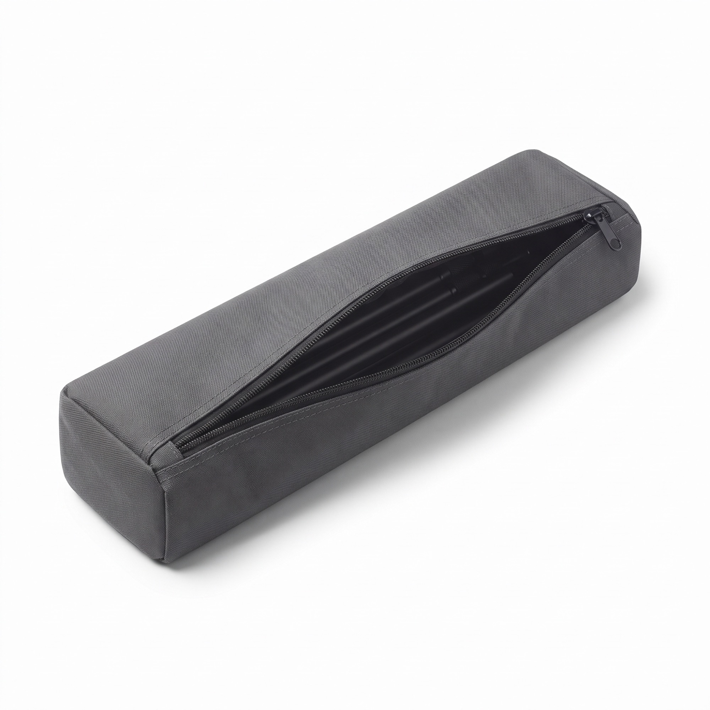

Microfibre plate
Retirez la microfibre de son support. Lavez-la à l'eau tiède, à la main ou en machine à 30 °C, sans adoucissant (il bouche les fibres). Laissez sécher à l'air, à plat. Évitez le sèche-linge à haute température.
Comment monter la perche, la démonter et laver les têtes pour qu'elle dure dans le temps.
En vidéo
Une vidéo courte sera ajoutée ici. En attendant, suivez le guide écrit ci-dessous.
Emplacement vidéo — à remplacer par <video> ou <iframe>
Étape 1
Repérez la poignée avec sa mousse antidérapante : c'est le point de départ de l'assemblage.
Vissez un tronçon après l'autre. Prenez-en autant que nécessaire pour la hauteur visée, jusqu'à {{LONGUEUR}}.
À chaque jonction, serrez la bague moletée à la main jusqu'à ce qu'elle soit ferme. N'utilisez pas d'outil, pour ne pas endommager le filetage.
Fixez la tête choisie sur l'embout. Vérifiez qu'elle est bien serrée avant de lever la perche.
Étape 2
Ranger la perche propre et sèche évite les traces et préserve les filetages.

Étape 3
Des têtes propres dépoussièrent mieux. Voici les méthodes recommandées. En cas de doute, suivez d'abord la notice fournie avec le produit.
Retirez la microfibre de son support. Lavez-la à l'eau tiède, à la main ou en machine à 30 °C, sans adoucissant (il bouche les fibres). Laissez sécher à l'air, à plat. Évitez le sèche-linge à haute température.
Secouez-le à l'extérieur pour retirer la poussière. Si nécessaire, lavez-le à la main à l'eau tiède avec un peu de savon doux, rincez, puis laissez sécher complètement à l'air avant de le ranger.
Tapotez pour déloger la poussière, puis rincez les poils à l'eau claire si besoin. Laissez sécher poils vers le bas pour ne pas retenir l'eau à la base.
Pour durer
Une question sur l'utilisation ? Contactez le SAV — réponse sous {{DELAI_REPONSE_SAV}}.